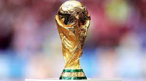

 La Copa Mundial de la FIFA, cuyo nombre original fue Campeonato Mundial de Fútbol, es el principal torneo internacional oficial de fútbol masculino a nivel de selecciones nacionales en el mundo. Este evento deportivo se realiza cada cuatro años desde 1930. Cuenta con dos etapas principales: un proceso clasificatorio en el que participan más de 200 selecciones nacionales y una fase final realizada cada cuatro años en una sede definida con anticipación en la que participarán 48 equipos a partir de la edición de 2026; durante un periodo cercano a un mes. Ha sido realizada en 22 ocasiones, en las que ocho países considerados históricamente potencias mundiales y candidatos han alzado la copa: Brasil es la selección más exitosa, con cinco victorias; Alemania e Italia le siguen con cuatro trofeos; Argentina con tres; Uruguay y Francia la han ganado dos veces, en tanto Inglaterra y España se han titulado campeones una vez.Los equipos europeos han ganado el título en doce ocasiones, mientras que los sudamericanos lo han hecho en diez.